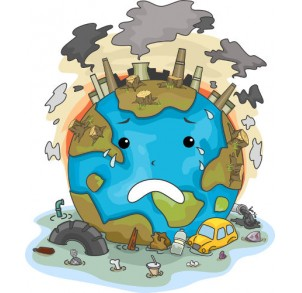

Informações sobre o autor
Nome: João Victor Araujo Bruzetti
Idade: 18 anos
Universidade em que estuda: Institudo Federal de Educação, Ciencia e Tecnologia de São Paulo, Campus Guarulhos
Curso: Análise e Desenvolvimento de Sistemas (ADS)
Conhecimentos: HTML 5, CSS 3, Linguagem de Progamação C
Hobbies: Cinema, Jogos Online, Academia, Animes, Series.
Gostos músicais: Rock, Heavy Metal, Rap.
Banda favorita: Link Park
| Temas Abordados |
| Linguagem de Progamação Swift: Swift é uma linguagem de programação desenvolvida pela Apple para desenvolvimento no iOS, macOS, watchOS, tvOS e Linux. |
Degradação ambiental: Degradação ambiental é qualquer processo que diminua a capacidade de determinado ecossistema em sustentar a vida.
Esse processo está ligado a alterações biofísicas que afetam o equilíbrio ambiental, modificando a fauna e flora natural. |

|  |